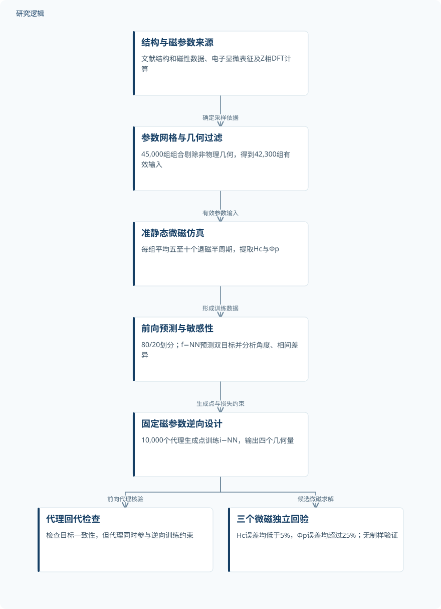
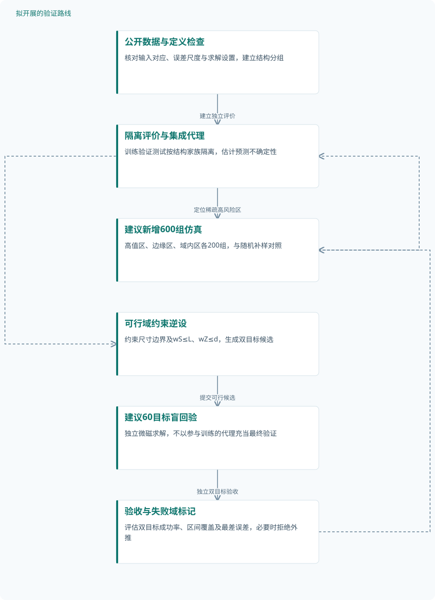

论文精读
SmCo-1:7磁体纳米结构对矫顽力的影响：高通量微磁数据的机器学习
Coercivity influence of nanostructure in SmCo-1:7 magnets: machine learning of high-throughput micromagnetic data
精读更新 2026-10-04 21:57 · 依据论文全文整理
SmCo-1:7磁体的高磁晶各向异性，为何没有充分转化为矫顽力？答案不仅在各相本身，也在纳米胞壁、富Zr片层及其交界处如何阻挡畴壁。Yang等将42,300组微磁仿真与正逆向神经网络结合，识别结构和磁性参数的作用，并按目标性能反求几何。本文最值得关注的是：提高矫顽力与增强钉扎并非同一个优化目标，而代理模型的一致性也不等于独立物理验证。
文章目录
从Brown悖论走向三相界面的协同设计
Sm(Co,Fe,Cu,Zr)7±δ的矫顽力潜力受到反磁畴形核和畴壁迁移共同限制，这正是本文讨论Brown悖论的材料背景。作者聚焦胞状2:17基体、条带状1:5相和富Zr的Z片层，试图回答哪些纳米结构最有效，以及能否从指定矫顽力反求结构。
三相并非简单叠加：1:5相提供较高各向异性，其与2:17相的畴壁能差形成排斥型钉扎；Z相则通过较低畴壁能形成吸引型钉扎。设计价值在于协调形核门槛、界面能垒与相比例，而不是一味增加胞壁或片层。
把几何、磁性与钉扎份额接入正逆向网络
几何由L、d、wS、wZ描述，采样范围依次为30–150、10–55、3–15、2–10 nm；磁性描述符包括失配角α和三相的Ms、畴壁厚度及畴壁能。Cu、Fe相内替代比例均取0、0.1、0.2、0.3，Z相采用Lit.、DFT、Mod.三套参数，反映其磁性不确定性。
微磁计算最小化交换、各向异性、静磁及外场能，评估准静态磁滞，而非完整动态演化。统一软磁边界层以K′=0.01Ku提供成核条件，界面交换强度取S=1，并忽略磁弹耦合；Φp=(Hc−Hp)/Hc衡量初始脱钉之后的钉扎贡献，不能直接当作全部反转机制的分解。
正向网络预测Hc和Φp，逆向网络在固定微磁参数下输出四个几何量。逆向损失同时约束结构误差与正向代理回代误差，权重λ=0.02，非负输出过滤器只保证尺寸非负。作者明确输出是一个代表性候选，而非唯一物理解。
原研究：三相微磁数据驱动的正逆向设计


实线表示原研究已完成的计算流程；代理回代与独立微磁回验分开，未包含逆向候选制样验证。
下载 SVG图示关系说明
实线表示相邻阶段的信息流，虚线表示跨阶段联系或反馈。
结构与磁参数来源 → 参数网格与几何过滤：确定采样依据；参数网格与几何过滤 → 准静态微磁仿真：有效参数输入；准静态微磁仿真 → 前向预测与敏感性：形成训练数据；前向预测与敏感性 → 固定磁参数逆向设计：生成点与损失约束；固定磁参数逆向设计 → 代理回代检查：前向代理核验；固定磁参数逆向设计 → 三个微磁独立回验：候选微磁求解
42,300组计算记录，三例独立微磁回验
45,000组参数经过几何过滤得到42,300组有效仿真，每组平均五至十个退磁半周期；这些重复反转不是独立试件。数据按80%训练、20%测试划分，训练记录33,840组；论文另有TEM和HAADF-STEM表征，但独立实物试件数未报告，也没有逆向候选的制样验证。
作者比较六类算法后选用多层感知机，测试Hc、Φp的R²分别为0.91、0.90，但高于4 T和Φp高于0.5的区域出现系统性低估。每个数据规模进行100次抽样，检验的是均值收敛；学习曲线在N≥10,000时R²约为0.90，不能据此保证稀疏高值区可靠。
逆向训练使用10,000个正向代理生成点，不是新增微磁仿真。三个候选另做微磁回验，Hc相对误差为3.22%、4.76%、3.21%，Φp误差却为28.20%、41.18%、25.87%；按目标排序，后者并非全部同向偏差。这比代理回代分数更清楚地揭示了双目标设计的短板。
| 验证任务 | 样本与规模 | 主要结果 |
|---|---|---|
| 高通量三相微磁仿真与数值精度检查 | 45,000组初始组合过滤为42,300组仿真，含10,800组L-domain；每组五至十个退磁半周期，独立实物试件数未报告。 | 0°时两域相对参考误差为4.65%、6.59%；30°时为0.61%、0.22%，不能推广为全部工况的误差界。 |
| 前向预测、算法比较与数据规模评估 | 训练33,840组、测试8,460组；各N进行100次独立抽样，不增加独立仿真；增强数量未报告。 | Hc：R²=0.91、MSE=1.04×10−3；Φp：R²=0.90、MSE=5.80×10−3。N≥10,000时R²约0.90。 |
| 固定微磁参数的逆向设计与独立微磁回验 | 10,000个点是代理生成数据；展示三个微磁验证案例，查询总数、验证总数及实物试件数未报告。 | 三例微磁Hc为3.10、2.10、4.36 T，RE均<5%；Φp为0.078、0.034、0.143，RE均>25%。 |
| 角度、成分及相分数响应与敏感性分析 | TPS使用10,000个代理预测点，另称模拟与预测各取150点；各成分组分配、数据重叠及置换次数未报告。 | α总体主导；Δσdw(S−M)对Φp重要性仅次于α。Hc与Φp峰区不重合，约70/20 vol.%相组合表现较高。 |
展开数据来源、分组、对照与验证边界
高通量三相微磁仿真与数值精度检查
数据来源。文献结构与磁参数、Z相DFT计算共同支持参数化；仿真结果与工具公开于DOI：10.5281/zenodo.18624659。
分组与工况。Cu、Fe替代比例各取0、0.1、0.2、0.3；Z相分Lit.、DFT、Mod.；采用两种计算域并检查0°、30°。
数据划分。数值精度检查不涉及训练测试划分；具体对照结构数量未报告，不能将计算作业数视为独立样本数。
对照与消融。以S-domain中0.25×0.25×0.25 nm³网格为参考，对照两域的0.5×0.5×2 nm³网格。
评价指标。检查Hc相对误差；磁滞分析包括Hn、Hp、Hc和无量纲Φp，场量以μ0H的T单位展示。
验证边界。理想周期结构、平均磁参数、统一缺陷层及S=1界面；随机缺陷、非理想界面和磁弹耦合消融未报告。
前向预测、算法比较与数据规模评估
数据来源。42,300组微磁记录用于预测Hc、Φp；均值收敛分析以完整数据统计量为参照，不是实物验证。
分组与工况。分别分析两个目标及数据规模；μ0Hc>4 T、Φp>0.5为明显偏差区域，其样本数量未报告。
数据划分。80%训练、20%测试；独立验证集、随机种子、按结构或成分分组隔离的策略未报告。
对照与消融。比较K近邻、神经网络、梯度提升、决策树、随机森林、支持向量机；逐模型分数及正式消融未报告。
评价指标。报告R²、MSE及均值MAPE；公式(12)的R²写法非常见，MSE尺度与单位未明确，学习曲线存在指标名称冲突。
验证边界。高值区系统性低估；均值收敛不保证局部预测可靠。网络8输入配置与正文14描述符的对应关系未说明。
固定微磁参数的逆向设计与独立微磁回验
数据来源。固定α=0及SmCo5、Sm2Co17、Lit. Z相参数；10,000个f−NN生成点训练i−NN，另回验三个候选。
分组与工况。目标(μ0Hc,Φp)为(3.00 T,0.100)、(2.00 T,0.020)、(4.50 T,0.180)；候选均含范围外尺寸。
数据划分。逆向任务专用比例未报告；每轮保存模型并以最小测试损失选模，额外独立评价集未报告。
对照与消融。比较目标、f−NN回代与微磁回验；直接优化、其他逆向算法及去除前向损失的消融未报告。
评价指标。代理回代报告R²、MSE；独立微磁回验报告相对误差RE。RE公式及MSE物理尺度未报告。
验证边界。代理参与训练约束，回代不独立；三例不足以证明系统外推。第二例Φp高于目标，不能概括为全部高估。
角度、成分及相分数响应与敏感性分析
数据来源。微磁统计、f−NN响应曲面及TPS相分数拟合；图9比较绝对描述符与相间差值、相分数表征。
分组与工况。无掺杂、Cu和Fe系列；角度统计包括0°、30°、45°、60°、85°，并开展固定厚度的L、d扫描。
数据划分。响应分析专用划分未报告；代理预测点不构成新增独立微磁验证，不能据点数推断证据强度。
对照与消融。与Stoner–Wohlfarth、Kondorsky模型比较；包含无Cu/Fe对照、微磁散点及两套描述符表征。
评价指标。分析Hc、Φp、Spearman相关、置换重要性和聚类；曲面误差、排序置信区间与重复次数未报告。
验证边界。相关与置换不等于因果；局部d趋势、相标识及次级重要性顺序存在图文冲突，不能推广为普适规律。
角度主导性能，最强钉扎不等于最高矫顽力
Spearman与置换分析均指向α的主导作用，角度响应介于Stoner–Wohlfarth和Kondorsky模型之间，支持混合反转机制。Cu添加降低Hc并削弱Φp；Fe使Hc略降、饱和磁化强度上升，并可局部增强钉扎。约70 vol.% 1:5相、20 vol.% Z相对应较高双目标组合，但不是普适最优配比。
证据边界需要保留：周期几何、平均成分和统一缺陷层没有覆盖真实材料的局部最弱环节。数值检查仅给出两个角度的具体误差；原文还存在14个物理描述符与网络8输入配置不衔接、公式(12)R²定义非常见、学习曲线MSE/MAPE名称冲突，以及局部d趋势和相标识不一致。测试集参与逆向选模，也削弱最终评价独立性；这些问题不能静默修正或据此断言代码错误。
从这篇论文走向下一项研究
以下为结合研究方向提出的候选方案，实验设计与预期目标有待验证。
面向高矫顽力稀疏区的约束逆设与独立回验
问题与短板。优先解决高值区低估、Φp回验偏差和测试集选模问题，而非先扩展网络规模。将代理一致性、独立微磁精度与外推失败率分别评价，避免一个总分掩盖双目标失衡。
改进机制。以模型集成估计不确定性，主动补充高Hc、强钉扎及分布边缘工况；逆设增加wS≤L、wZ≤d和尺寸边界约束。候选必须通过独立微磁求解，不把代理回代当成最终裁判。
候选创新。候选创新是把可行域约束、不确定性采样和双目标独立验收组合用于该体系。已检索的magnum.np摘要支持可微微磁逆问题，但不能据此宣称本文已采用该框架或新组合已有效。
数据与实验设计。建议先检查公开Zenodo数据与工具，再新增600组微磁工况：高值区、边缘区、域内区各200组。按结构家族隔离训练、验证、测试，另预留60个逆向目标做盲回验，均属建议设计。
对照与消融。复现原f−NN/i−NN作为基线，对照随机加样、主动加样及代理直接优化；逐项移除集成、几何约束和新增高值数据。所有方案使用相同计算预算，独立测试集不参与选模。
成功判据。建议以盲回验Hc相对误差≤5%、Φp绝对误差≤0.02定义双目标达标，同时报告成功率和置信区间。低Φp区不只用相对误差，并检查区间覆盖率及最差工况。
风险与替代方案。模型可能利用代理偏差生成虚假优解，几何约束也不能保证可制备。若高值区持续失配，转为局部可信域优化和微磁直接搜索；若预算不足，先缩小目标域并明确拒绝外推。
从平均周期结构走向局部最弱环节的鲁棒设计
问题与短板。现有平均结构未覆盖局部Cu富集、界面起伏和弱交换接触，三例回验也没有回答制造波动下性能是否保持。后续应检验同一平均几何的不同局部构型是否产生显著性能分散。
改进机制。将四个平均尺寸扩展为体素结构与局部成分场，扰动界面形貌、Cu分布及交换强度S。以低分位Hc和Φp共同约束设计，寻找对局部弱区不敏感的候选，而非只优化平均预测。
候选创新。候选创新是将局部最弱环节表征与三相磁体鲁棒逆设结合。已检索的Nd–Fe–B物理引导机器学习摘要支持实验—仿真融合思路，但其结果不能移植为SmCo体系的效果证据。
数据与实验设计。建议选30个域内平均结构，每个生成20个随机构型，共600组新增仿真，并按母结构隔离测试。公开数据用于初始化；真实局部成分与形貌需另行采集，可协作获取TEM/APT资料，不假定现有仪器。
对照与消融。比较平均周期模型、仅几何扰动、仅成分扰动及联合扰动；另消融S变化与低分位目标。控制相体积分数和平均成分，区分局部起伏效应与整体配比改变，避免混杂解释。
成功判据。建议要求鲁棒候选在独立随机构型上的Hc第10百分位优于等预算名义设计，同时Φp达到预设窗口。报告均值、分位数、失败率及区间；没有制样前仅称计算鲁棒性改善。
风险与替代方案。局部参数映射缺乏实测约束时，扰动幅度可能主导结论。可先用文献区间开展分层敏感性分析，再逐步引入配对表征；若S与成分效应不可辨识，分别给出边界情景而不强行反演。
后续路线一：高值区主动补样与双目标盲回验


所有节点均为拟议研究，补样数量与验收阈值属于建议设计，不表示已经取得性能改善。
下载 SVG图示关系说明
实线表示相邻阶段的信息流，虚线表示跨阶段联系或反馈。
公开数据与定义检查 → 隔离评价与集成代理：建立独立评价；隔离评价与集成代理 → 建议新增600组仿真：定位稀疏高风险区；建议新增600组仿真 → 隔离评价与集成代理：补样更新代理；隔离评价与集成代理 → 可行域约束逆设：预测与优化支持；可行域约束逆设 → 建议60目标盲回验：提交可行候选；建议60目标盲回验 → 验收与失败域标记：独立双目标验收；验收与失败域标记 → 建议新增600组仿真：失败工况反馈